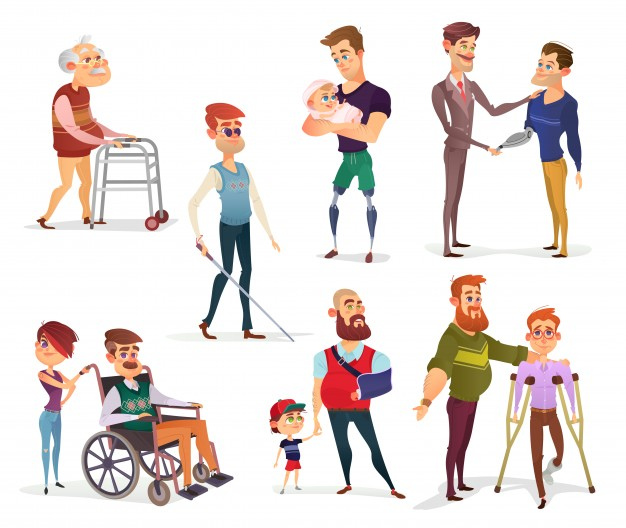

인권침해-장애인차별
인권침해에는 장애인에 대한 차별도 있습니다.
,
장애인차별에 대한 사례를 알아 보겠습니다.
- 장애인을 성폭행,감금,살인,암매장하는 것입니다. 이 사례는 실제로 존재합니다. 2018년 태백특수학교에서 교사가 장애인학생을 성폭행을 하였다는 사건이 있습니다.
- 장애인을 상대로 차별,따돌림,폭력하는 것입니다. 이것은 학생들 사이에서 일어나는데 집단으로 따돌림을 하여 장애인학생이 자살까지 한 사건이 있습니다.
- 장애인을 무조건 도와주는것입니다. 이것도 차별이 맞습니다. 이런 생각도 좋습니다만 '내가 도와줘야지라는'생각이 계속되면 '내가 도와줘야지 쟤는 뭘 할수 있어'라고 생각하여 차별할 수 있다는것입니다.
해결방법
되돌아가기
전문가들은 우리 인간은 잠재성장애인이라고 부릅니다. 한마디로 언젠가는 사고로 장애인이 될 확률이 있다는 것입니다. 그렇기에 우리는 그들을 위에있는 사례처럼 인권을 침해하면 안됩니다.
우리는 평등한 존재입니다. 전에도 말했듯이 조금은 달라도 우리는 평등하고 태어날때부터 인권이라는 하나에 기본적인 권리가 있습니다. 우리는 남의 권리를 침해하거나 바꿀수 없습니다.
그러니 우리는 그들을 차별하면 안됩니다.

(이렇게 장애인을 위한 시설도 필요합니다.)